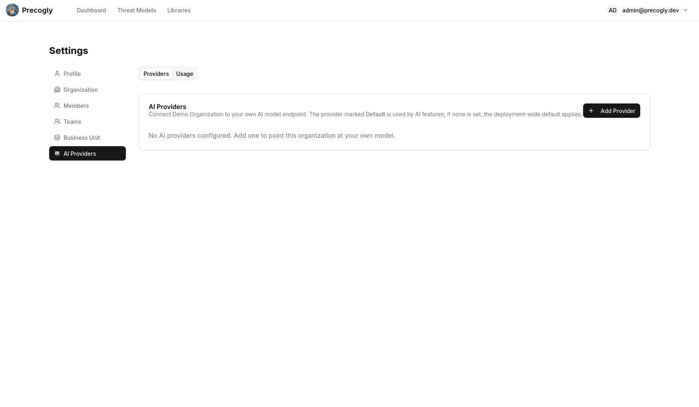
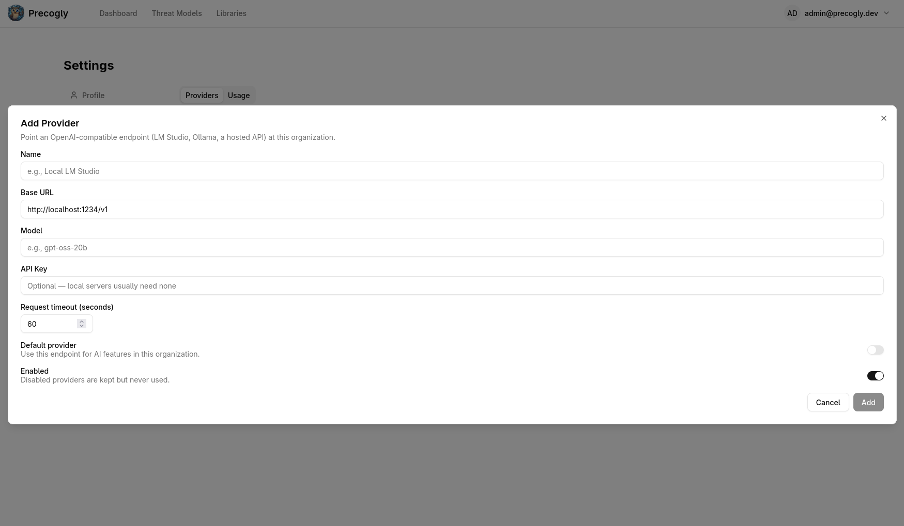
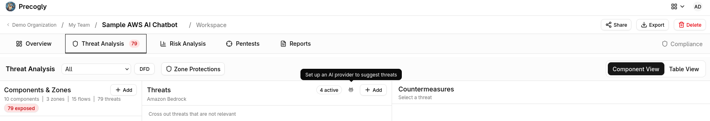

AI Features (Bring Your Own Model)¶
Precogly can connect an organization to an OpenAI-compatible model endpoint. AI is optional and is disabled until an operator or an organization member configures a provider.
What the AI features do¶
| Feature | What it does | What is saved |
|---|---|---|
| AI Threat Suggestions | Ranks applicable threats from the component's installed library packs and explains why they may apply. | Nothing is saved until you select a suggestion and add it through the normal threat workflow. |
| AI-powered DFD generation | Reads an architecture image, extracts components, data flows, and trust zones, then proposes a diagram layout. | When generation succeeds, the generated nodes and edges are inserted into the editor for review and adjustment. |
| AI Usage reporting | Shows organization-level token and cost totals, trends, and breakdowns by feature, model, and user. | Usage records are aggregated from completed AI calls. |
AI suggestions are grounded in the threat library already available to the component. The suggestion model chooses from that candidate list; it does not create arbitrary threat records.
Set up an AI provider¶
An organization member with access to organization settings can set up an AI provider for the organization:
- Open Settings → AI Providers.
- Select Add Provider.
- Enter a name, the endpoint's OpenAI-compatible base URL, and the model identifier.
- Enter an API key if the endpoint requires one. Local servers such as LM Studio and Ollama commonly do not require a key.
- Set the request timeout if the model needs more or less than the default 60 seconds.
- Mark the provider as Default and Enabled when it should serve this organization's AI requests.
- Save the provider, then use Test connection in the provider row to check reachability.


Only one provider can be the organization's default. Other saved providers can remain enabled as alternatives. A disabled provider is retained but is not selected for AI requests.
Provider fields¶
| Field | Meaning |
|---|---|
| Name | A label to identify the provider in organization settings. |
| Base URL | The OpenAI-compatible API root that exposes /chat/completions, such as https://api.openai.com/v1. |
| Model | The model name expected by that endpoint. |
| API key | An optional credential for the endpoint. When editing a provider, leave this blank to keep the existing key. |
| Request timeout | The maximum time, in seconds, to wait for a model response. |
| Default | Selects this provider for the organization. |
| Enabled | Allows or prevents the provider from being used. |
The connection test runs on the server and reports whether the saved endpoint can be reached. It does not return the API key to the browser.
Which provider is used?¶
Precogly resolves a provider in this order:
- The organization's enabled Default provider.
- The deployment-wide environment configuration, when the operator has enabled the AI fallback.
- AI is unavailable when neither source provides a usable configuration.
An organization provider therefore overrides the deployment fallback for that organization only. If AI is unavailable, AI controls explain that a provider must be configured and link to the provider settings page.
Operator-wide configuration¶
Operators can configure a fallback provider with environment variables. This is useful when every organization should inherit one local or hosted endpoint, or when an organization has not configured its own provider.
| Variable | Default | Description |
|---|---|---|
AI_SUGGESTIONS_ENABLED |
False |
Enables the operator-wide AI fallback. |
AI_BASE_URL |
http://localhost:1234/v1 |
OpenAI-compatible API root. |
AI_MODEL |
local-model |
Model identifier sent to the endpoint. |
AI_API_KEY |
(empty) | Optional key for the operator fallback. |
AI_REQUEST_TIMEOUT |
60 |
Request timeout in seconds. |
AI_SECRET_KEY |
(empty) | Fernet key used to encrypt organization provider keys at rest. Required when organization keys are stored through the UI. |
See Configuration for the complete operator environment table and examples for LM Studio, Ollama, and OpenAI.
AI Threat Suggestions¶
- Open a component's threat workflow in the DFD editor.
- In the threat picker, select Rank next to the owl icon.
- Review the ranked candidates, severity, rationale, and source pack.
- Select a relevant threat and add it using the normal workflow.
If the ranked list is empty, check that the component is linked to a component library and that its applicable library threats have not already been added. If the request fails, use the retry action shown in the AI result panel.

The AI ranking is a review aid. You remain responsible for deciding whether a threat belongs in the model and for confirming its severity.
AI-powered DFD generation¶
The Generate action in the DFD toolbar uses a vision-capable model to turn an architecture image into editable diagram data:
- Select Generate in the DFD toolbar.
- Upload an architecture image and enter the application name and description.
- Review the extracted components, data flows, trust zones, and clarifying questions.
- Answer any questions that provide useful context.
- Select Generate DFD.
- Review and adjust the generated layout in the editor after generation completes.
The model must support image inputs for the analysis step. The generated diagram is a starting point and should be reviewed for missing components, incorrect relationships, and trust-boundary placement.
AI Usage reporting¶
Open Settings → AI Providers → Usage to review the current organization's AI activity. The usage view supports This month, Last month, Last 30 days, and All time windows and includes:
- total requests and tokens;
- cost when the provider reports priced usage;
- a monthly usage trend; and
- breakdowns by feature, model, and user.
Self-hosted endpoints can report token counts without a dollar cost. A missing cost value does not mean that the request was not counted.
API key and data handling¶
- Operator fallback keys are supplied through server environment variables; do not commit them to the repository or expose them in frontend configuration.
- Organization keys are encrypted before being stored in the
AIProviderConfigdatabase record. The API exposes only whether a key is set, never the key itself. - When editing a provider, leaving the API key blank preserves the existing key. Entering a new value replaces it.
AI_SECRET_KEYis separate from Django'sSECRET_KEY. Rotating it makes existing organization keys unreadable, so those keys must be entered again.- AI requests are sent to the configured endpoint. Threat ranking includes the selected component and candidate library context; DFD generation includes the uploaded image and the application details and answers you provide. Choose a provider whose data-handling terms meet your organization's requirements.
- AI output is advisory. Review suggestions and generated diagrams before using them as threat-modeling or audit evidence.
Note
If no provider is configured, Precogly does not make an AI request. The AI control remains available so it can direct you to Settings → AI Providers.